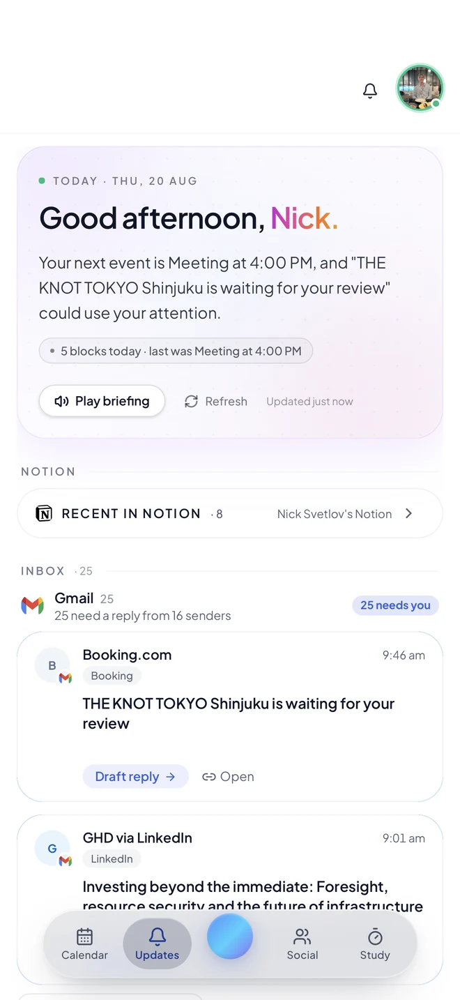
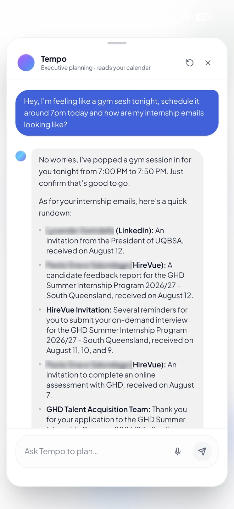
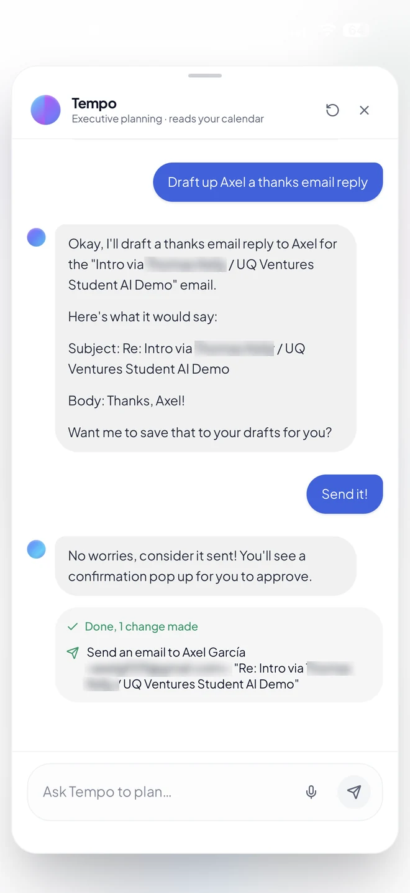
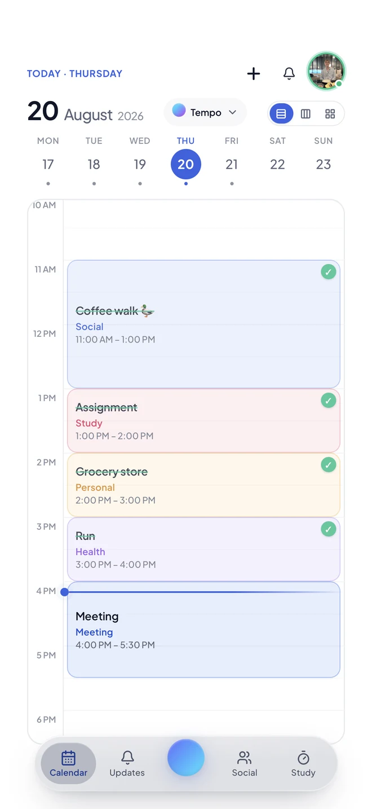
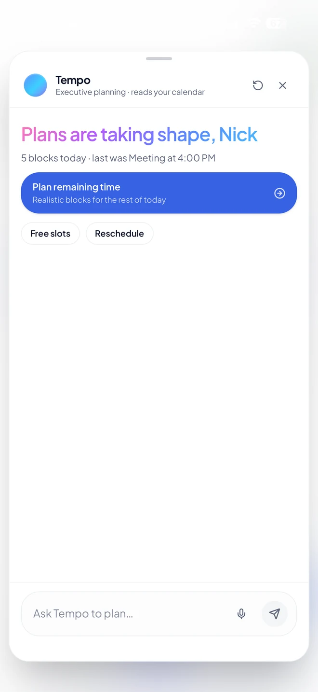
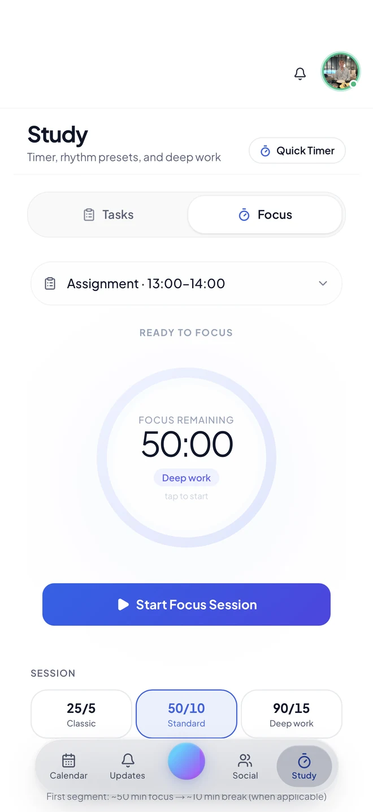
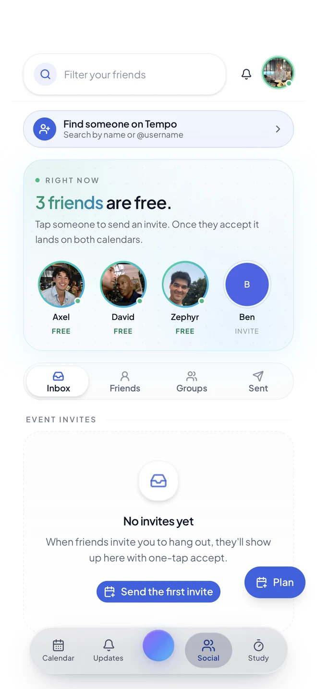
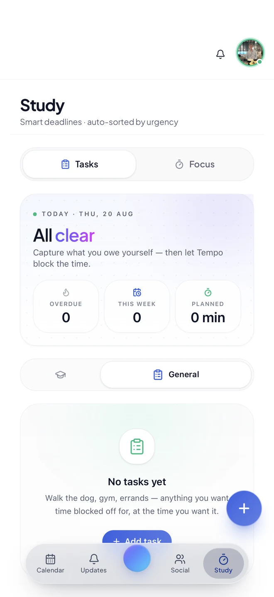

Axel García Ferreira
Co-founder · Engineering, UQ
LinkedInMost AI starts from a blank page. Tempo starts from your calendar, your inbox, your notes and your week, then plans around the life you already have.
Tempo isn't on the App Store yet, so the list is how you get in. Free, no card. Pricing

No commands, no rigid syntax, no setting up rules. Tempo already has your context, so one scrappy sentence is enough, and it can handle two unrelated things at once.

Tempo books the session in a real gap, then reads back every internship thread by sender and date. Your calendar and your inbox, answered together, because it can see both.

Tempo writes the reply in your tone and shows it to you first. Nothing leaves your account until you say go, and every action ends with a plain receipt of exactly what happened.
A chatbot needs you to explain your life every single time you open it. Tempo connects to the four places your week actually lives, so the answers are about you rather than about productivity in general.
Classes, shifts, meetings and the gaps between them. It plans into real free time, not imaginary time.
Not 25 unread. Twenty-five that need a reply, from sixteen senders, with drafts already written.
Notion pages and course load come along for the ride, so deadlines land where they actually fit.
See which friends have a real gap right now. Tap one, send an invite, and it lands on both calendars.
Tempo reads your accounts to run your assistant. That's it. Your data isn't sold, and it isn't used to train public models. Read the Privacy Policy if you want the specifics.
It plays through on its own, or jump to whichever one you want.





Coloured blocks for study, social, health and personal, with everything you've finished ticked off. Week strip up top, and three layouts to switch between.
One short read on what actually needs you today, pulled from your calendar and inbox together. Play it out loud when your hands are busy.
Ask it anything in plain English, or tap "Plan remaining time" and let it build realistic blocks around whatever is already booked.
Pick the task, pick a rhythm (25/5, 50/10 or 90/15) and start. Sessions attach to the actual assignment instead of floating free.
Tempo compares calendars so you can stop sending "you around?" texts. Tap a friend who's free, send an invite, and it lands on both calendars.
Capture what you owe yourself: gym, errands, an assignment. Tempo blocks the time for it. Sorted by urgency, not by when you typed it.
Connect once. Tempo reads them to understand your day, and only writes when you approve.
Apple Calendar and more on the way.
The tool that means you never have to hold your calendar in your head.
I was about to subscribe to Motion. Then I saw $34 a month and backed off. Tempo does similar AI scheduling for a fraction of that. I was sold.
I spend more on energy drinks in a day than Tempo costs for a month. Of course I'd subscribe.
Joining the list is free today, and reserves your spot for when checkout opens.
We're Axel and Nick, engineering students at the University of Queensland. We built Tempo because we were the problem: classes in one app, deadlines in another, an inbox we kept meaning to get to. Every assistant we tried wanted us to explain our week before it could help, so we started building one that already knew it.
Co-founder · Engineering, UQ
LinkedInCo-founder · Engineering, UQ
LinkedInSupported by UQ Ventures · Tempo on LinkedIn
Join the list and we'll send your access link. Free, no card, and you can leave any time.
120+ people already waiting. Terms